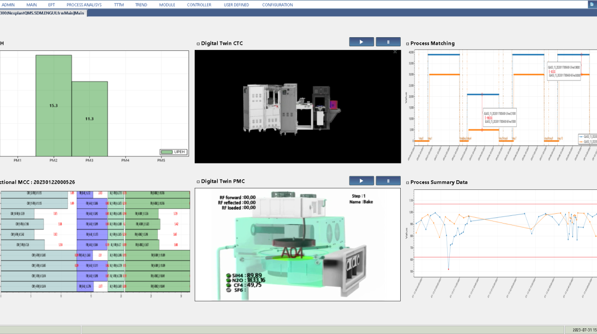
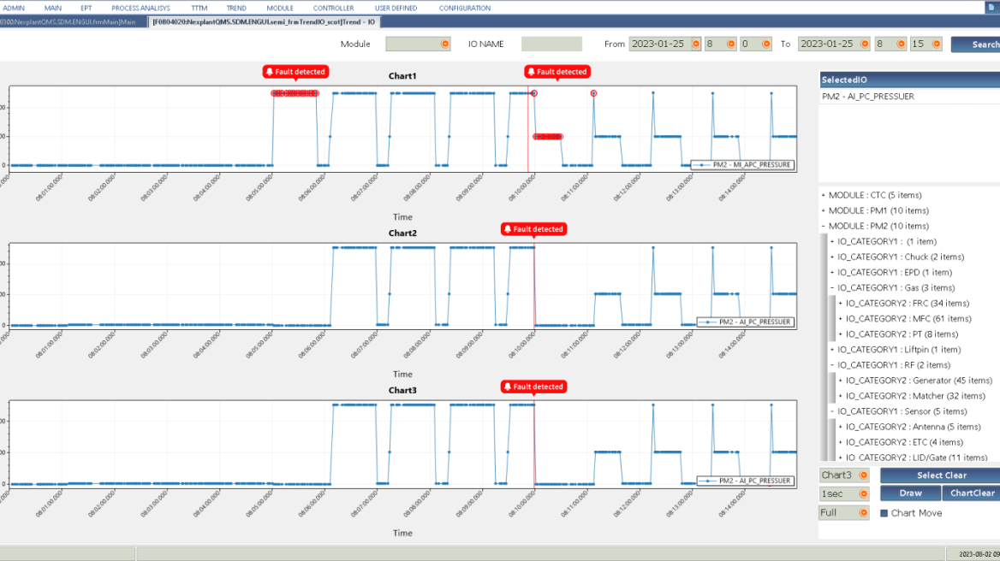
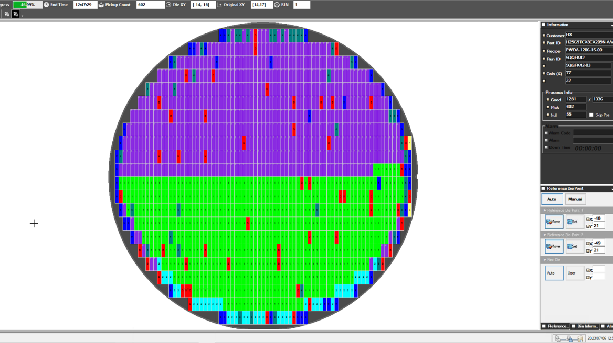
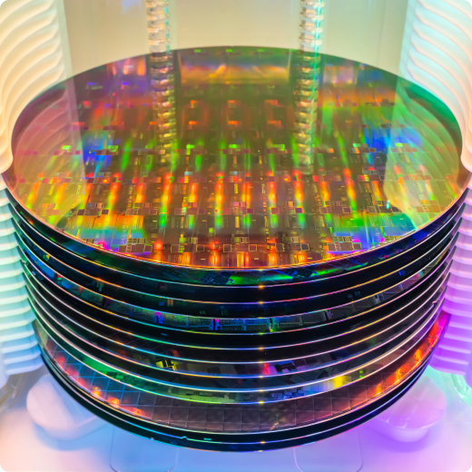

@@include('./pages/includes/head.html', {
pageTitle: 'Nexplant MESplus EES | Solutions - Miracom',
ogTitle: 'Nexplant MESplus EES | Solutions - Miracom',
ogDesc: '미라콤아이앤씨의 EES 솔루션은 실시간 설비데이터 분석 및 엔지니어링 솔루션으로 설비를 지능화시키고 양산 성능을 극대화합니다.',
metaDescription: '미라콤아이앤씨의 EES 솔루션은 실시간 설비데이터 분석 및 엔지니어링 솔루션으로 설비를 지능화시키고 양산 성능을 극대화합니다.',
metaKeywords: '미라콤아이앤씨, 미라콤, 설비지능화, 설비데이터, EES, 설비진단, 자동화설비',
ogUrl: 'https://miracom-inc.com',
ogImage: '../../assets/images/og/miracom-og.png',
ogType: 'article',
cssPath : '../../assets/css/common.min.css'
})
@@include('../src/pages/includes/header.html', {
type : 'sub-type',
gnb : true,
subDepth: true,
subArr : ['미라콤아이앤씨', '서비스 및 솔루션', 'Nexplant MESplus EES']
})
서비스 및 솔루션
Nexplant MESplus EES
Equipment Engineering System 실시간 설비데이터 분석 및 엔지니어링 솔루션
자동화설비의 스트리밍 데이터를 실시간 수집 처리, 관리 및 진단을 통해 설비의 운영 효율을 극대화하고 최상의 공정 조건을 유지하기 위한 솔루션입니다.
기능성
데이터표준화 지원 (실시간)데이터 수집 및 전처리BDA운영 지원
적합성
표준 모듈화 기능 실현 특화 기능의 현장 최적화 최단기간 셋업 지원
다양성
하이테크설비 외 자동차부품, 소재 등의 다양한 제조업에 적용
기능성
데이터표준화 지원 (실시간)데이터 수집 및 전처리BDA운영 지원
적합성
표준 모듈화 기능 실현 특화 기능의 현장 최적화 최단기간 셋업 지원
다양성
하이테크설비 외 자동차부품, 소재 등의 다양한 제조업에 적용
EES의 모듈 구성
FDC
Fault Detection& Classification
실시간 설비 센서 데이터 이상 감지 및 분류
EPT
Equipment Performance Tracking
장기간 설비 성능과 운영 효율 추적관리
RMS
Recipe Management System
레시피 중앙 통제를 통해 변경점 확인 및 품질 사고 방지
RMS-Test
TAMS (Test Program Auto Load Management System)
반도체 테스트 공정 /프로그램 자동화 및 분석
RMS-W/B
BPCS (Bonding Program Compare System)
반도체 Wire Bonder 레시피 중앙통제 및 비교를 통한 설비 제조 품질 상향 평준화
sDM
self Diagnostic Machine
설비 지능화 실현을 위한 자가진단 빌트인 솔루션
FDC
Fault Detection& Classification
실시간 설비 센서 데이터 이상 감지 및 분류
EPT
Equipment Performance Tracking
장기간 설비 성능과 운영 효율 추적관리
RMS
Recipe Management System
레시피 중앙 통제를 통해 변경점 확인 및 품질 사고 방지
RMS-Test
TAMS (Test Program Auto Load Management System)
반도체 테스트 공정 /프로그램 자동화 및 분석
RMS-W/B
BPCS (Bonding Program Compare System)
반도체 Wire Bonder 레시피 중앙통제 및 비교를 통한 설비 제조 품질 상향 평준화
sDM
self Diagnostic Machine
설비 지능화 실현을 위한 자가진단 빌트인 솔루션
특장점

Point 1.
실시간 설비 데이터 이상 관리 및 자가진단

Point 2.
오픈소스의 다양한 AI알고리즘을 활용한 빅데이터 분석

Point 3.
하이테크(반도체, 디스플레이, 2차전지, 태양광) 등 업종별 특화 기능을 구축
구축 사례

반도체 패키징 전문 기업인 고객사는 기사용하는 MES 솔루션의 노후화와 Multi-factory 생산 체계를 위하여 효율적인 표준 시스템을 구축할 필요가 있었습니다.
공정의 작업 지시별 생산/불량 실적을 구분하고, 작업자 경험 지식을 정보화하여 공정 대응 능력을 높였습니다. QMS로 수율 리포트와 제품 설비의 실시간 모니터링 기능을 구축하였고, 웨이퍼 맵 관리 기능을 적용하였습니다.
고객사는 미라콤의 QMS를 통해 생산, 정보 자동화와 제조 지능화를 통해 4차 산업혁명의 제조 트렌드 변화에 대응하며 경쟁력을 확보하였습니다.